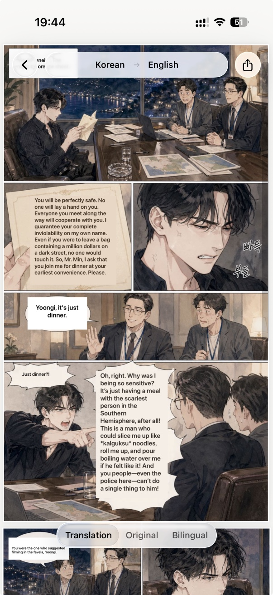
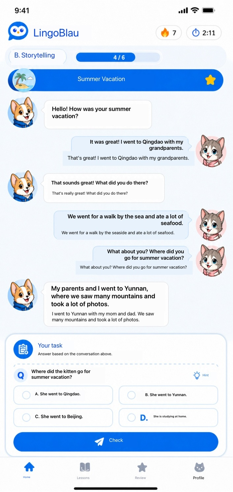
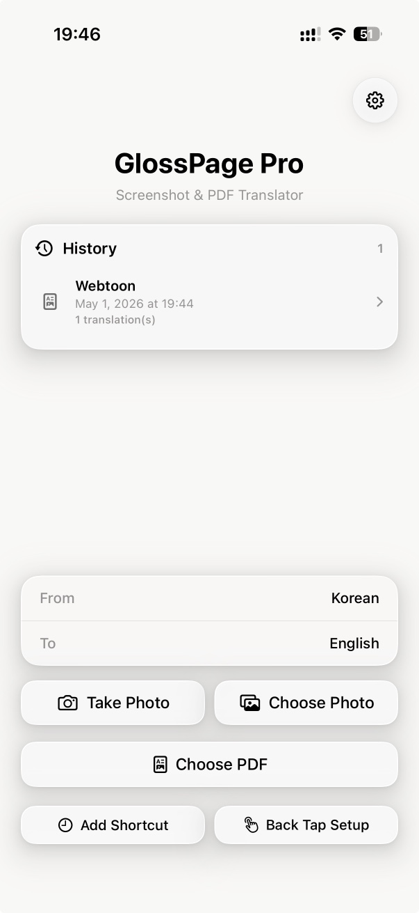
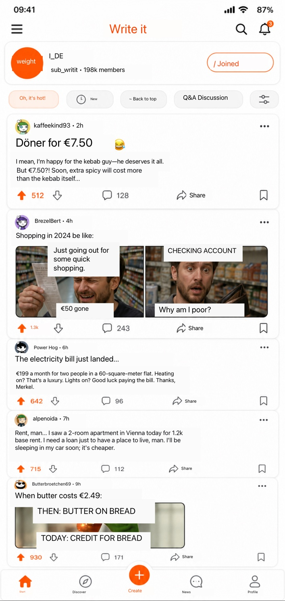
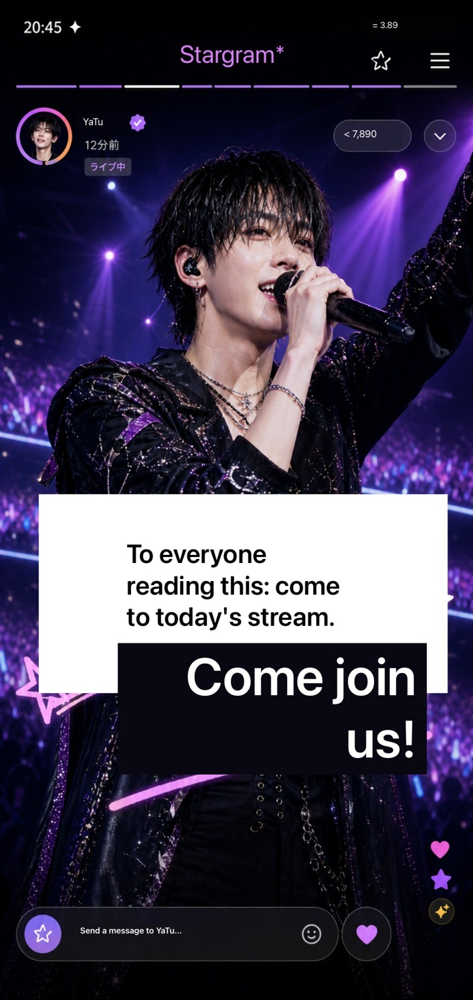

Tap the back of your phone or press the Action button — GlossPage takes a screenshot and overlays the translation right where the original text was. No copy-paste, no switching apps.
Free to start · No account required · Privacy-first OCR





Assign GlossPage to your iPhone's Back Tap gesture or Action Button in Settings. Takes 30 seconds — once.
From any app, any screen — tap the back of your phone or press the Action Button. GlossPage captures the screen instantly.
OCR finds every text block. The translation is placed back exactly where the original text was — no layout breaks, no copying.
Open a PDF or tap Translate in Safari — GlossPage handles it page by page. Share, export, or save to your translation history.
Translates screenshots, images, PDFs, and web pages. Finds text with OCR and places translated text back into the original layout. Source language is detected automatically. Your original files stay private — only recognized text blocks are sent for remote translation.
Assign GlossPage to Back Tap or the Action Button. From any app, double-tap the back of your iPhone — screenshot taken, translation done.
Free · limitedAny image, any screenshot — street signs, menus, books, documents. Translated text overlays the original in place. Free includes limited daily use; GlossPage Local unlocks unlimited local translation.
Free · limitedTranslate multi-page PDFs page by page, with translated text overlaid in the original layout. GlossPage Local removes watermarks; GlossPage Pro adds high-quality online translation and export.
Free · limitedTranslate entire web pages through the Safari extension — text replaced in place, layout preserved. GlossPage Pro unlocks unlimited Safari translation.
Free · limitedTranslate any image from Photos, Safari, or any app — directly from the iOS Share Sheet, without opening GlossPage.
ProExport translated text as plain text, Markdown, or a bilingual side-by-side document. PDF text export is included in GlossPage Pro.
ProShow translation alongside the original text — ideal for language learners and careful reading.
ProGlossPage Local keeps recent translated documents. GlossPage Pro unlocks unlimited history with multiple translations per item.
Pro